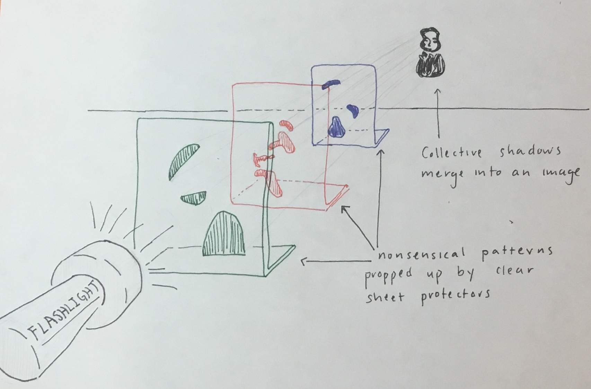

Typically when we think of visual art, we think of colors, lines, shapes -- a play of light. With this project, however, I wondered, “Could I use shadows, the absence of light, as a medium to create visual art?”
Originally, I wanted to project an image of a thinking boy onto the wall using several layers of sheet protectors, like this:
After working for some days, however, I realized that, given my limited time, this plan was not feasible. There were too many factors I needed to control for: the tilt of the sheet protectors, the effect of distance on the shadow’s size, keeping the pieces in place within the sheet protectors, etcetera. I considered other versions of this project -- making my own sheet-protectors out of leftover plastic (nope, the plastic was too warped), constructing the project vertically (nope, I had nothing to hold the sheet protectors in place) -- before looking for alternate ideas.
In the brainstorming stage of the project, I had taped little experiments like this:
where I played with the motion of shadows against a textured surface. This got me thinking about movement, particularly sundials, and the movement of shadows throughout the day. Eventually those thoughts and experiments converged into the final project you see above, where the shadow slinks and stretches to animate a face.
This final project does not have the complicated set-up of my original idea. However, complexity is not a requirement for good ideas; sometimes simple materials give you a wider range of expression. Looking at the product, I am quite satisfied :)